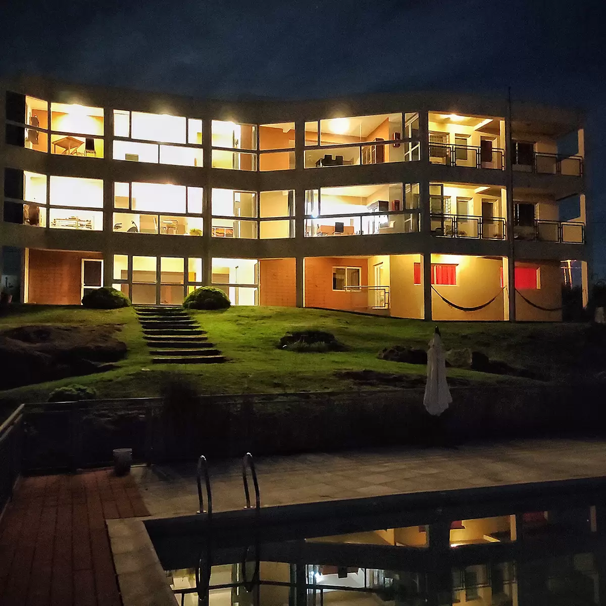

Nuestros Servicios
Asistencia médica
Supervisión médica semanal y control preventivo de salud. Servicio de emergencia médica.
Kinesiología
Trabajamos gimnasias grupales junto a nuestra profesional de kinesiologia para mantener a nuestros adultos mayores fisicamente activos.
Nutrición y gastronomía
Alimentación, saludable, sabrosa, con productos de calidad y una variada combinación de sabores. Bajo la supervición de nuestra profesional en Nutrición.